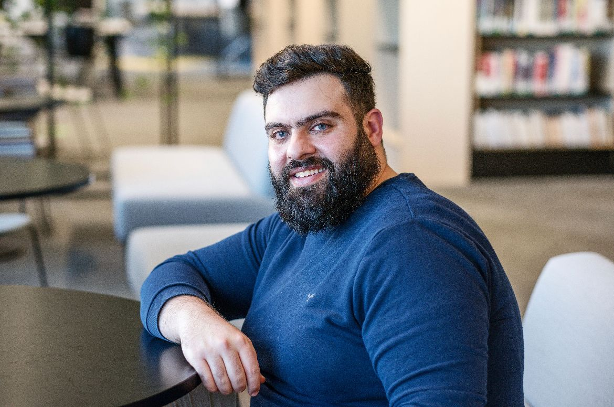

Ivan Chohaili's First Website Resume

Summary
Results-driven Service Desk Analyst with over four years of experience. Proven track record of providing top-tier technical support to a diverse user base of thousands of staff across 70+ business units globally. Demonstrated ability to tackle challenges, assume additional responsibilities, and actively pursue further education, certifications and experience. Seeking new opportunities to further expand my knowledge.
Education
- Bachelor of Information Systems - Western Sydney University
- Certificate III Networking - Tafe NSW
Work Experience
- Service Desk Analyst - Navitas
- IT Support Engineer - Al Amanah College
- SEIS Officer - Western Sydney University
Skills
- Effective Communicator
- Fast learner
- Ability to Multitask
- Ability to Work in a Team
- Customer Support
Courses/Certifications
- ITIL-4 Foundations
- Azure AZ-900
- CompTIA A+